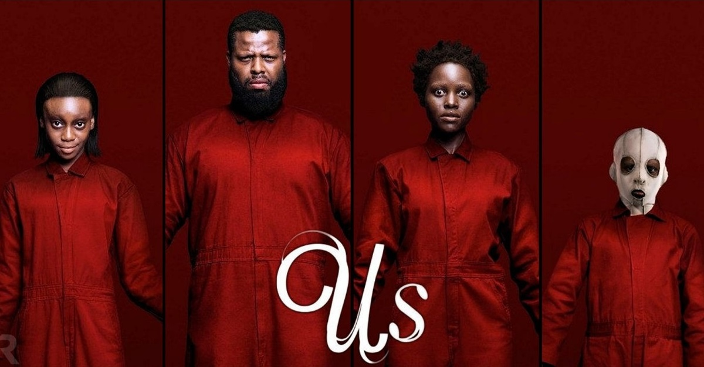

Us

Adelaide Wilson, su marido y sus dos hijos visitan la casa en la que ella creció junto a la playa. Allí, Adelaide tiene un presentimiento siniestro que precede a un encuentro espeluznante: cuatro enmascarados se presentan ante su casa.